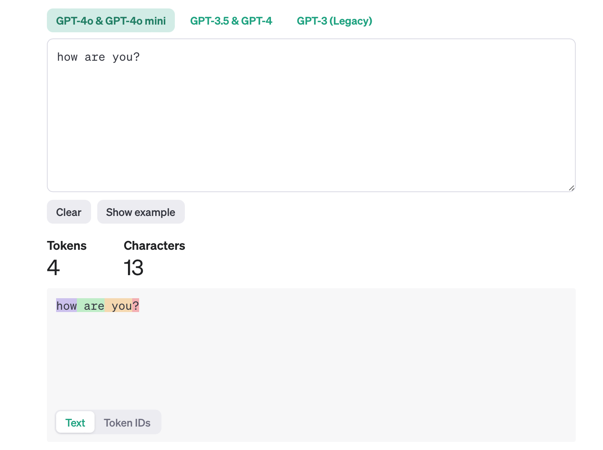
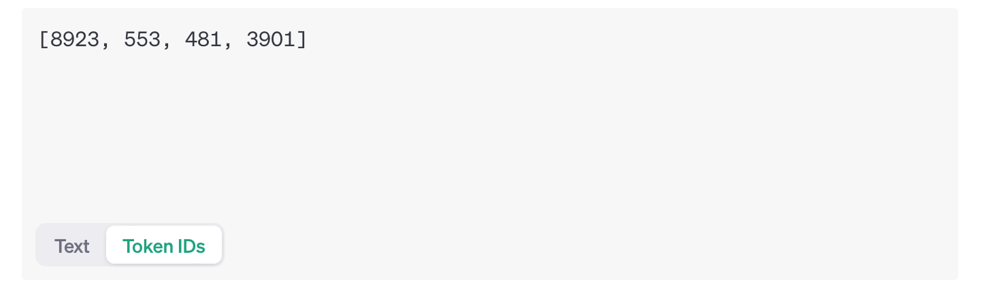
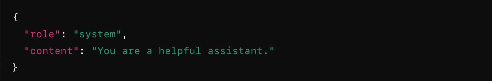

from langchain_openai import ChatOpenAI- To count message tokens to and from openAI LLM"“This post tells you different ways to count the tokens, both the input tokens sent to LLM and the tokens in output response”
1. Set env key for openai
import getpass
import os
if not os.environ.get("OPENAI_API_KEY"):
os.environ["OPENAI_API_KEY"] = getpass.getpass("Enter your OpenAI API key: ")2. Use langchain
Lets use the langchain library to chat with LLM
llm = ChatOpenAI(model= "gpt-4o-mini", temperature=0)aimessage = llm.invoke("how are you?")
aimessageAIMessage(content="I'm just a computer program, so I don't have feelings, but I'm here and ready to help you! How can I assist you today?", additional_kwargs={'refusal': None}, response_metadata={'token_usage': {'completion_tokens': 28, 'prompt_tokens': 11, 'total_tokens': 39, 'completion_tokens_details': {'audio_tokens': None, 'reasoning_tokens': 0}, 'prompt_tokens_details': {'audio_tokens': None, 'cached_tokens': 0}}, 'model_name': 'gpt-4o-mini-2024-07-18', 'system_fingerprint': 'fp_f85bea6784', 'finish_reason': 'stop', 'logprobs': None}, id='run-7482b300-97f1-48a1-a990-78a84410220c-0', usage_metadata={'input_tokens': 11, 'output_tokens': 28, 'total_tokens': 39, 'input_token_details': {'cache_read': 0}, 'output_token_details': {'reasoning': 0}})messages = [{"role":"user","content":"how are you?"}]The above response message says ‘prompt_tokens’: 11 and output tokens as 28
lets verify it
3. Verify with tiktoken library
import tiktokenencoding = tiktoken.encoding_for_model("gpt-4o-mini")encoding.encode("how are you?")[8923, 553, 481, 30]Lets decode and verify the text
encoding.decode([8923, 553, 481, 30])'how are you?'we can also see how the tokens are split interactively by acccessing https://platform.openai.com/tokenizer


As seen above, the result above matches with the result from tiktoken library, however the count doesnot match with response AIMessage why?
As openAI expects the input request be sent with “role” and “content” as dictionary, langchain adds it internally even if we specify the message as plain string. we could check the details by turning on the debug mode

import langchain
langchain.debug=Truellm.invoke("how are you?")[llm/start] [llm:ChatOpenAI] Entering LLM run with input:
{
"prompts": [
"Human: how are you?"
]
}
[llm/end] [llm:ChatOpenAI] [1.27s] Exiting LLM run with output:
{
"generations": [
[
{
"text": "I'm just a computer program, so I don't have feelings, but I'm here and ready to help you! How can I assist you today?",
"generation_info": {
"finish_reason": "stop",
"logprobs": null
},
"type": "ChatGeneration",
"message": {
"lc": 1,
"type": "constructor",
"id": [
"langchain",
"schema",
"messages",
"AIMessage"
],
"kwargs": {
"content": "I'm just a computer program, so I don't have feelings, but I'm here and ready to help you! How can I assist you today?",
"additional_kwargs": {
"refusal": null
},
"response_metadata": {
"token_usage": {
"completion_tokens": 28,
"prompt_tokens": 11,
"total_tokens": 39,
"completion_tokens_details": {
"audio_tokens": null,
"reasoning_tokens": 0
},
"prompt_tokens_details": {
"audio_tokens": null,
"cached_tokens": 0
}
},
"model_name": "gpt-4o-mini-2024-07-18",
"system_fingerprint": "fp_f85bea6784",
"finish_reason": "stop",
"logprobs": null
},
"type": "ai",
"id": "run-a81f00b2-3c0a-4b8f-8a59-756b8740a9ec-0",
"usage_metadata": {
"input_tokens": 11,
"output_tokens": 28,
"total_tokens": 39,
"input_token_details": {
"cache_read": 0
},
"output_token_details": {
"reasoning": 0
}
},
"tool_calls": [],
"invalid_tool_calls": []
}
}
}
]
],
"llm_output": {
"token_usage": {
"completion_tokens": 28,
"prompt_tokens": 11,
"total_tokens": 39,
"completion_tokens_details": {
"audio_tokens": null,
"reasoning_tokens": 0
},
"prompt_tokens_details": {
"audio_tokens": null,
"cached_tokens": 0
}
},
"model_name": "gpt-4o-mini-2024-07-18",
"system_fingerprint": "fp_f85bea6784"
},
"run": null,
"type": "LLMResult"
}AIMessage(content="I'm just a computer program, so I don't have feelings, but I'm here and ready to help you! How can I assist you today?", additional_kwargs={'refusal': None}, response_metadata={'token_usage': {'completion_tokens': 28, 'prompt_tokens': 11, 'total_tokens': 39, 'completion_tokens_details': {'audio_tokens': None, 'reasoning_tokens': 0}, 'prompt_tokens_details': {'audio_tokens': None, 'cached_tokens': 0}}, 'model_name': 'gpt-4o-mini-2024-07-18', 'system_fingerprint': 'fp_f85bea6784', 'finish_reason': 'stop', 'logprobs': None}, id='run-a81f00b2-3c0a-4b8f-8a59-756b8740a9ec-0', usage_metadata={'input_tokens': 11, 'output_tokens': 28, 'total_tokens': 39, 'input_token_details': {'cache_read': 0}, 'output_token_details': {'reasoning': 0}})Now lets check what is the token count after putting it in proper format
encoding.encode('{role:user,content:how are you?}')[90, 8716, 114851, 11, 3252, 25, 8923, 553, 481, 30, 92]And what is the content token length? It matches!
len(encoding.encode(aimessage.content))28